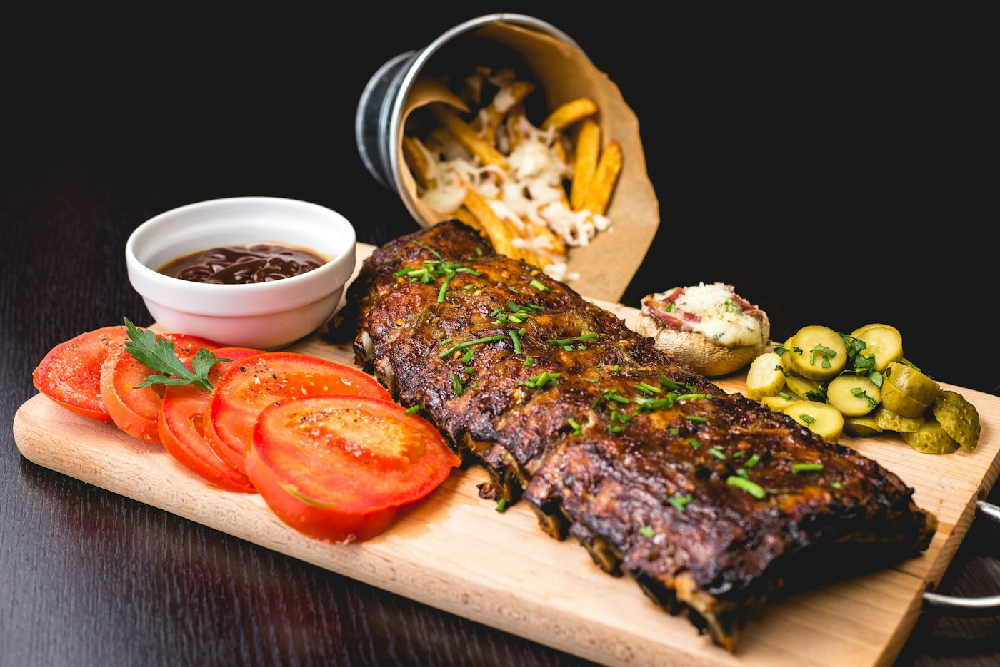
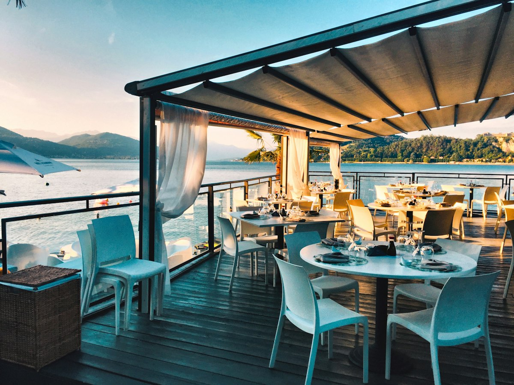
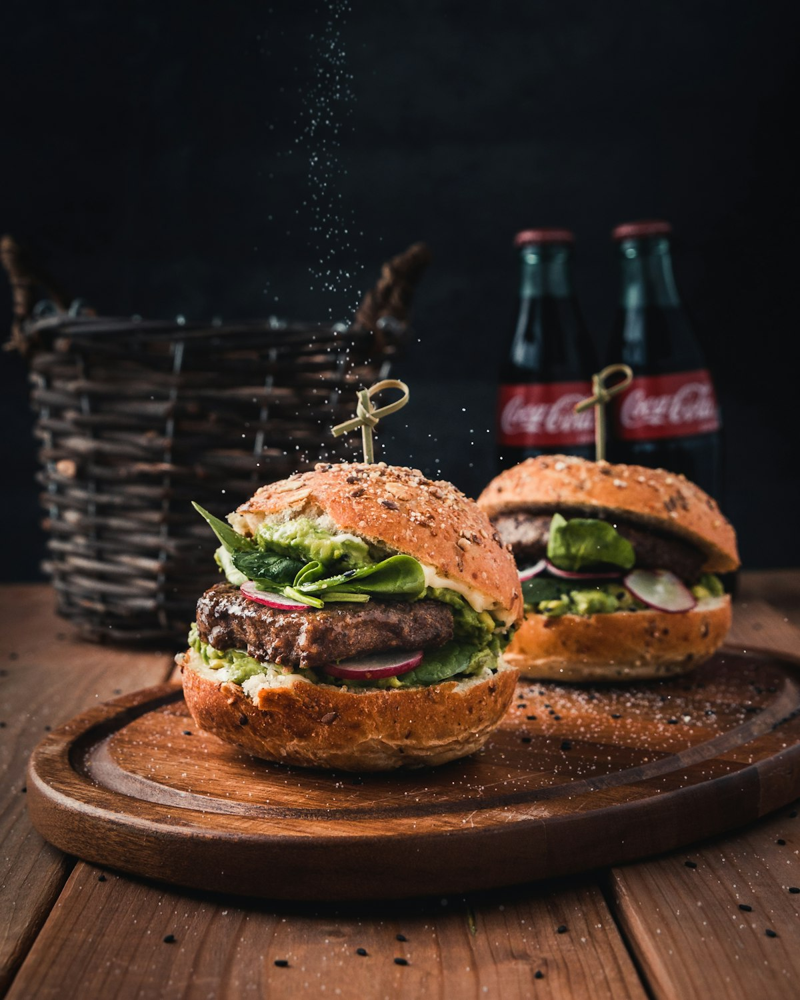

Karoo lamb roll
Slow-cooked lamb, crisp slaw, house chutney, toasted roll.
HOUSE FAVOURITE
A little fire. A lot of heart.
Karoo-inspired comfort, a good squeeze of lemon, and something worth passing around. An independent kitchen concept for the long lunch and the ride home.
Take a look at the menu ↓A place at the table / 02
COOK
Our kitchen, in spirit
Karoo Kitchen is imagined around honest plates and unhurried company. The sample story shows how a local food business might bring its menu, point of view and practical details together.
Come by for a look ↘

A stool saved for you / 03
44 Market Street, Stellenbosch
Fictional location for this concept
HOURS ILLUSTRATIVE ONLY
Monday—Thursday11:00—20:00
Friday—Saturday11:00—21:00
Sunday11:00—16:00
Demo links route to VENDERS.CO; this concept does not take orders.